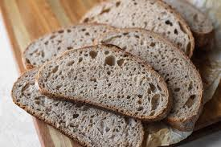
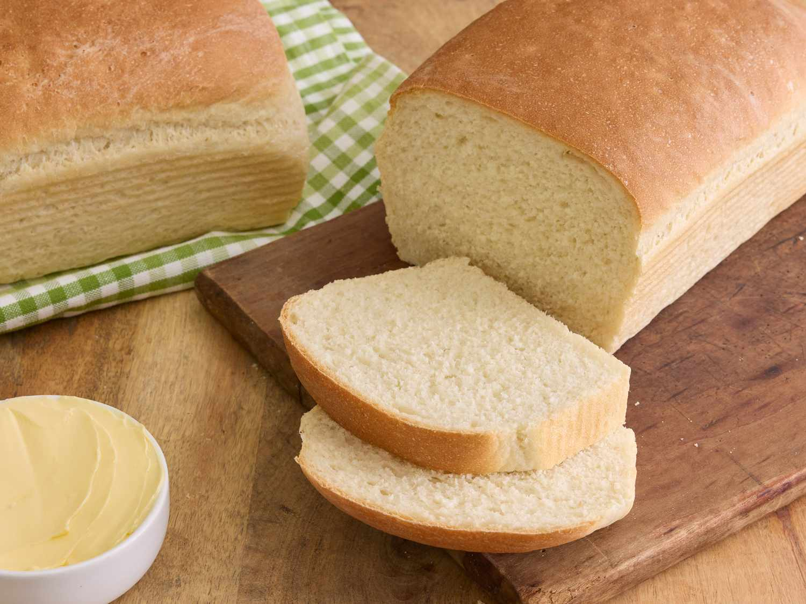
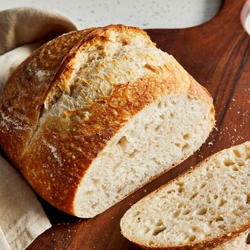
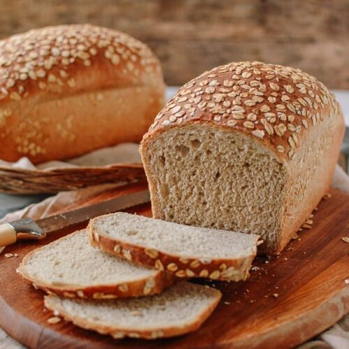
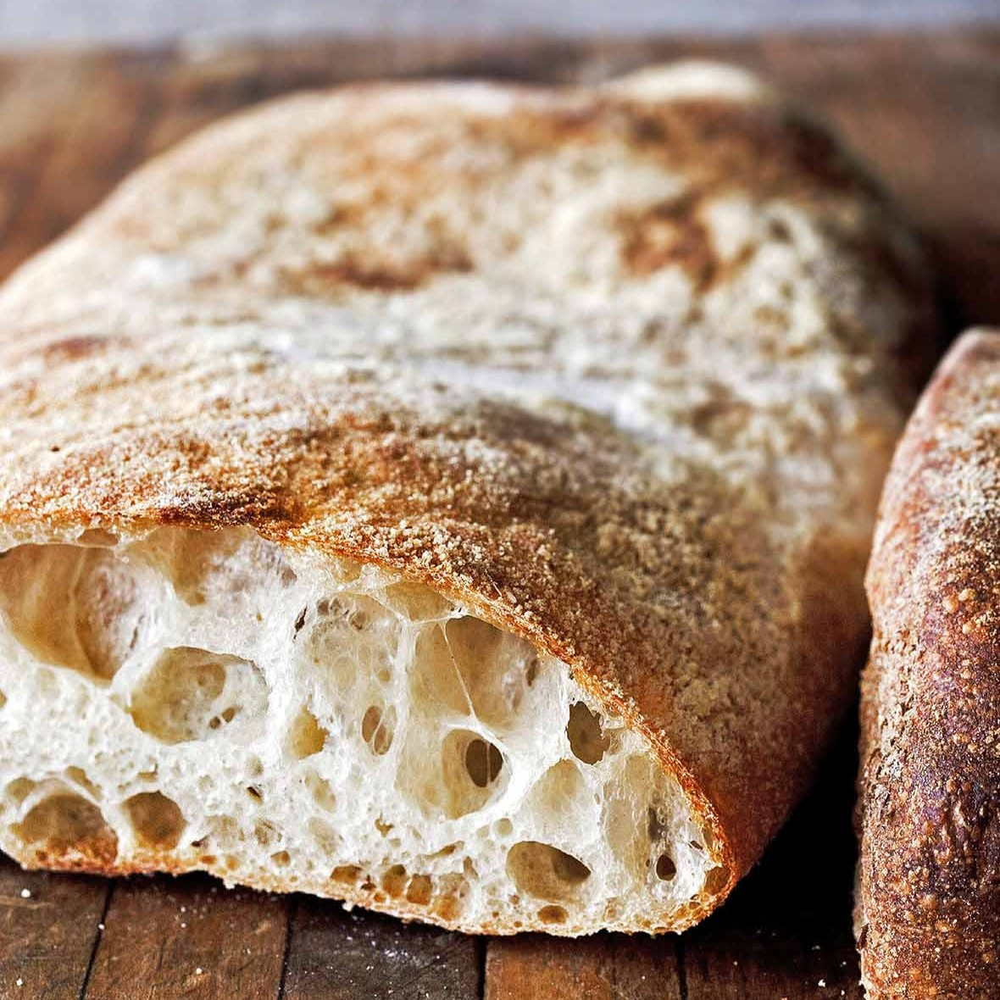

Whole Wheat Bread
- Whole wheat flour – 3 cups (360g)
- Warm water – 1 to 1¼ cups (240–300ml, ~40°C)
- Active dry yeast – 2¼ tsp (1 packet or about 7g)
- Salt – 1½ tsp
- Honey or brown sugar – 2 tbsp (for flavor and to feed the yeast)
- Olive oil or vegetable oil – 2 tbsp (for moisture and softness)
- Optional additions:
- 1 tbsp ground flaxseed or oats (for extra fiber)
- 1 tbsp milk powder (for tenderness)
- Seeds or nuts (sunflower, pumpkin, etc.)
White Bread
- All-purpose flour – 3½ cups (about 450g)
- Warm water or milk – 1¼ cups (300ml, around 40–45°C)
- Active dry yeast – 2¼ tsp (1 packet or 7g)
- Sugar – 2 tbsp (helps activate yeast and adds flavor)
- Salt – 1½ tsp
- Unsalted butter or oil – 2 tbsp (makes the bread soft and tender)
- Optional additions:
- 1 egg (for richness and color)
- Milk instead of water (for a softer crumb and richer taste)
Sourdough
- Bread flour – 3½ cups (about 450g)
- Water – 1½ cups (360ml), room temperature
- Sourdough starter (active and bubbly) – ½ cup (120g)
- Salt – 1½ tsp (8g)
- Notes:
- The sourdough starter is a natural ferment made from flour and water, developed over 5–7 days.
- This bread requires long fermentation (usually 12–24 hours total) to develop flavor and rise naturally.
- No added yeast or sugar is needed.
Multigrain Bread
- Bread flour – 2½ cups (300g)
- Whole wheat flour – 1 cup (120g)
- Rolled oats – ½ cup (45g)
- Mixed seeds (sunflower, flax, chia, sesame, etc.) – ¼ cup (30g)
- Warm water or milk – 1¼ to 1½ cups (300–360ml)
- Active dry yeast – 2¼ tsp (1 packet or 7g)
- Honey or brown sugar – 2 tbsp (for flavor and yeast activity)
- Salt – 1½ tsp
- Olive oil or melted butter – 2 tbsp
- Opitional additions
- Add soaked grains (quinoa, millet, cracked wheat) for extra texture
- Sprinkle seeds or oats on top before baking
Rye Bread

- Rye flour – 2 cups (240g)
- Bread flour – 1½ cups (180g) (for better structure)
- Warm water – 1½ cups (360ml)
- Active dry yeast – 2¼ tsp (1 packet or 7g)
- CMolasses or honey – 1–2 tbsp (for a deep, slightly sweet flavor)
- Salt – 1½ tsp
- Caraway seeds – 1 tsp (optional but traditional)
- Olive oil or melted butter – 2 tbsp (optional, for softness)
- Optional additions
- Replace part of the water with buttermilk for a tangier taste
- Use a sourdough starter instead of yeast for a traditional version
Ciabatta
- For the sponge (biga/pre-ferment):
- Bread flour – 1 cup (120g)
- Water – ½ cup (120ml), room temperature
- Active dry yeast – ¼ tsp
Mix and let sit at room temperature for 12–18 hours.
- For the dough:
- Bread flour – 2 cups (240g)
- Warm water – ¾ cup (180ml)
- Olive oil – 1½ tbsp
- Salt – 1½ tsp
- Active dry yeast – 1 tsp
- The prepared sponge (biga) – all of it
- Notes:
- Ciabatta dough is very wet and sticky—perfect for those signature holes.
- No shaping is needed—just stretch and fold.
- High hydration = open, airy texture.
- For the sponge (biga/pre-ferment):
Baguette

- Bread flour – 3¼ cups (400g)
- Warm water – 1½ cups (360ml), around 25–30°C
- Active dry yeast – 1 tsp (or 7g)
- Salt – 2 tsp (10g)
- Notes:
- No fat, sugar, or oil—just the four essential ingredients.
- Requires long fermentation (preferably overnight in the fridge) for the best flavor and texture.
- Shaping and steam during baking are key to a crispy crust.